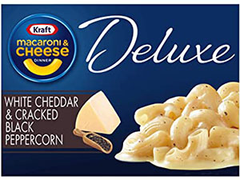

| Description | Rating | Description | Approximate Cost | |
|---|---|---|---|---|
 |
Kraft Deluxe White Cheddar & Cracked Black Peppercorn | 10/10 | This is how you update a classic. Kraft Deluxe brings the signature cheesy, salty, slightly sweet Kraft flavor and amplifies it to an S-tier mac and cheese. It's sharp, peppery, creamy, and downright sublime. Sporked social media manager Mark Catangui commented, "Wow, it's so gooey, but that might be because it was prepped well." You're damn right, Mark. I cooked every mac on this list, and made sure every single one was served up hot and creamy. Even as I made this Kraft Deluxe in the pot, I could tell it was special. | $3.79 |
|
Velveeta Shells & Cheese | 10/10 | Simply put, Velveeta Shells & Cheese is so good that the brand is synonymous with mac and cheese. Personally, it's my favorite. As previously stated, Velveeta adheres to the Italian principles of pasta very well. It is creamy, smooth, buttery, delicious, and somehow every molecule of shell feels drenched in thick, delicious cheese goo. In this way it's like cacio e pepe. The texture of Velveeta Shells & Cheese is very much like the mac and cheese I make from scratch. Sure, it's overly processed cheese goo, but it's America's overly processed cheese goo. And you can't debate the gloriously smooth and velvety texture. Nothing comforts like Velveeta Shells & Cheese. | $3.59 |
|
Cheetos Bold & Cheesy Mac 'N Cheese | 9.5/10 | Cheetos has absolutely nailed it with their new mac and cheese: It's salty, cheesy, and dense with Cheetos flavor, just like their snacks. The packet of cheese dust that comes with this box is absolute gold. This mac is the perfect mash-up of junk food and comfort food. Like all of these mac and cheeses, if you want more flavor in your bowl, you can adjust the cooking ratios accordingly. Personally, I leave a tablespoon or two of pasta out of the package to get a higher ratio of dust-to-pasta. Cheetos Bold & Cheesy carries intense flavor. This is a big win for humanity. | $1.59 |